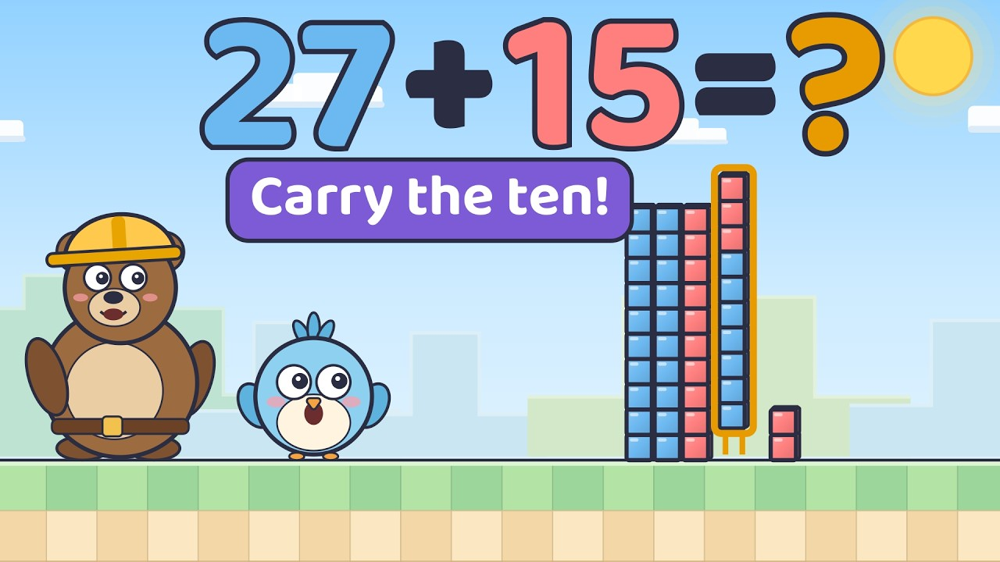
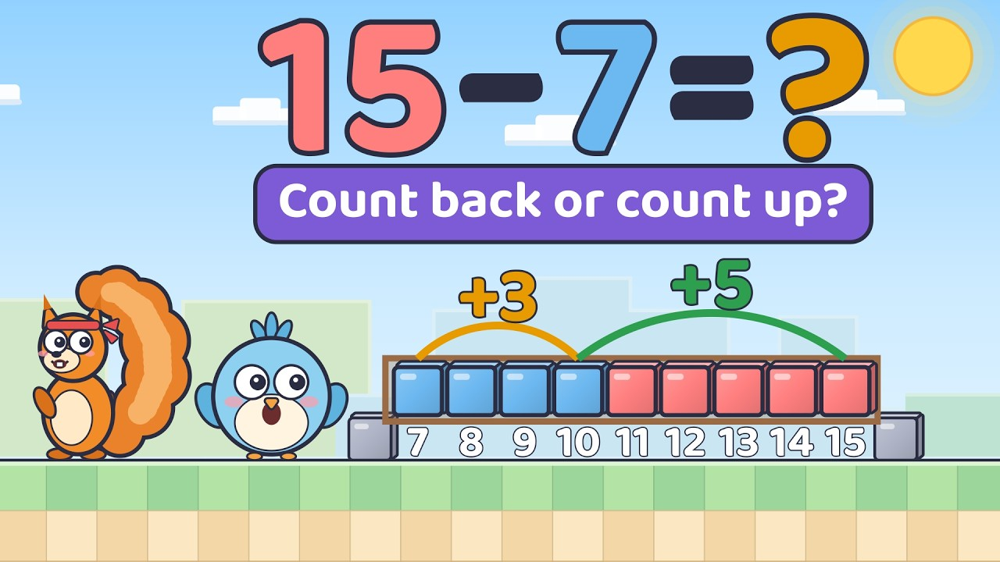
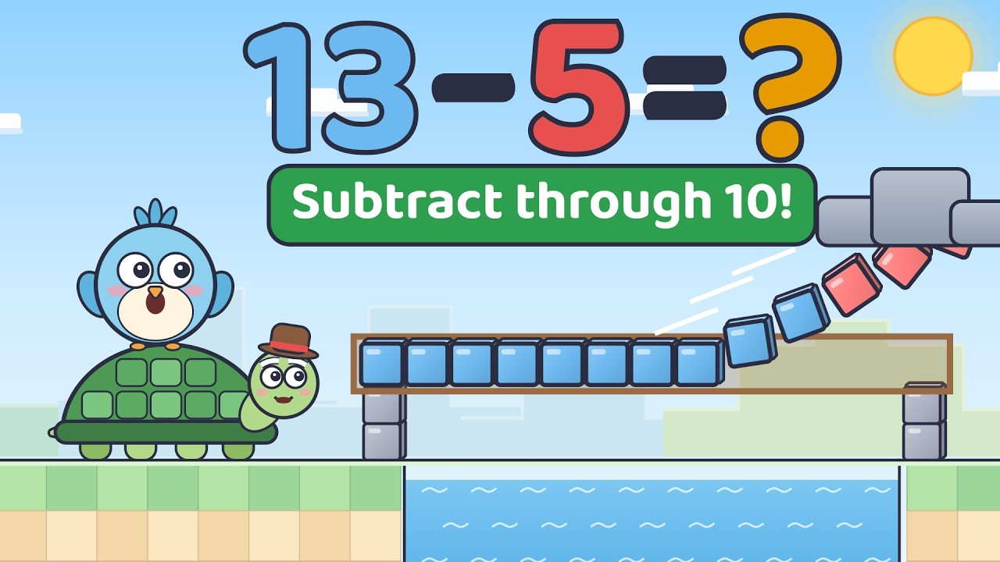
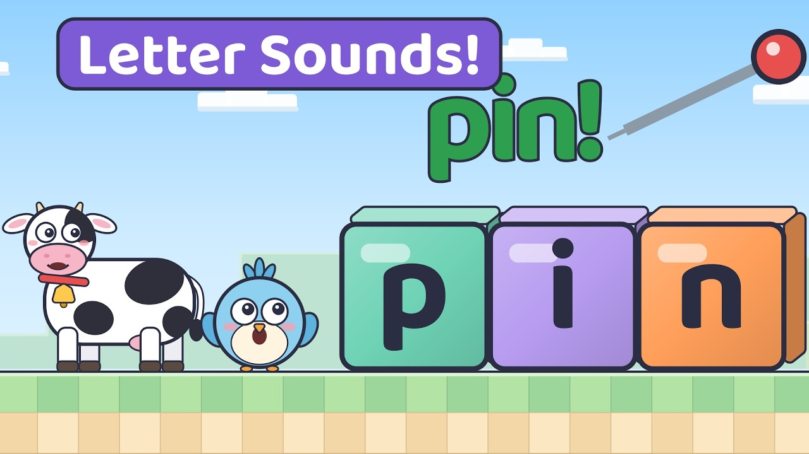
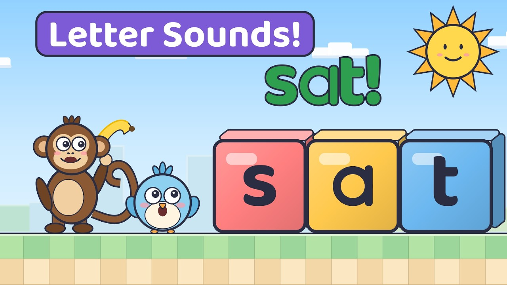
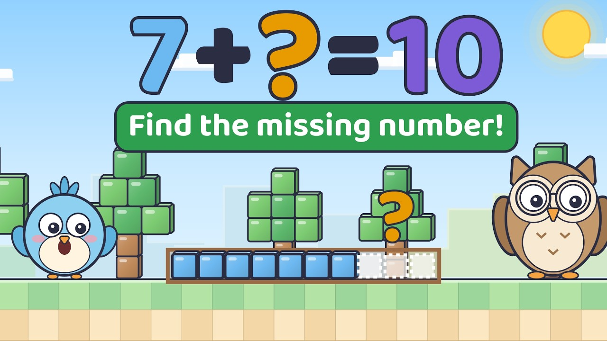

We teach children how to think
Short, friendly animated videos where children discover ideas step by step, guessing, checking and laughing along the way. We start with maths, and there's much more to come.
Watch on YouTubeMeet the friends
Ollie Ma'am
A wise, kind owl teacher. She asks a question, gives you time to think, and then shows you why the answer works.
Chiku
A little bird who is curious about everything. Chiku guesses, sometimes gets it wrong, checks, and learns, just like every child.
How we teach
Not just what to remember, but how to think. Every Curious Nest video keeps these promises:
- We start with a question. A puzzle is on screen from the very first second.
- Children think before we tell. We ask, pause, and let your child guess first.
- We show why, not just how. Every trick comes with a picture that proves it.
- There is more than one way. We compare ways and ask which is quicker, and why.
- Mistakes are thinking. Chiku makes real mistakes and finds them by checking.
- Does it make sense? Estimating and checking become everyday habits.
- One thinking move per video, like Break it apart or Look for a pattern, to use anywhere.
- Your child does the last step, with a try-at-home challenge.
Newest videos

27 + 15 = ? Carry the Ten!Addition for Kids

15 − 7 = ? Count Back or Count Up?Subtraction for Kids

13 − 5 = ? Subtract Through 10!Subtraction for Kids

Letter Sounds p i nBlend pin, tin, sip

Letter Sounds s a t p i nPhonics for Kids

7 + ? = 10. Find the Missing Number!Addition for Kids
Most watched
For parents and teachers
- Made for children aged about 4 to 8, in Indian English, with captions.
- Each video is a few minutes long and pauses so children can answer at home.
- Our videos are marked "Made for Kids" on YouTube, so comments are off.
- This website has no ads, no sign-ups and no tracking. See our privacy policy.